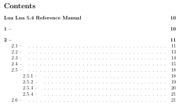
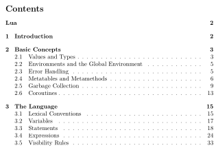

PDF Version of the Lua Manual
Using pandoc and some filters to render the Lua manual as PDF.
A question came up on the Lua mailing list, asking whether there was a PDF version of the Lua manual. This is, of course, the home domain of pandoc, and I got nerd-sniped into producing a PDF (and ePUB) version of the manual.
This is a good opportunity to showcase some pandoc features. The post describes the process of going from an HTML web page to a PDF file via LaTeX and pandoc. We will see how to
- quickly convert documents with pandoc;
- use Lua filters to improve the result by modifying the document; and
- fine-tune the output by setting appropriate pandoc options.
Invoking pandoc
The first step is to call pandoc on the Lua manual website. Even when keeping everything bare-bones, the result is already decent:
pandoc --pdf-engine=xelatex --output=lua-manual.pdf \
"https://lua.org/manual/5.4/manual.html"Produces

This requires a somewhat recent version of pandoc as well as XeLaTeX to be installed. It is possible to forgo the trouble of installing the requirements by using the pandoc/latex Docker image:
docker run --rm -v "$PWD":/data -u $(id -u):$(id -g) pandoc/latex:2.9.2.1 \
--pdf-engine=xelatex --output=lua-manual.pdf \
"https://lua.org/manual/5.4/manual.html"Replacing characters
The above commands will produce warnings about characters which are unavailable in the default fonts. We don’t want characters to go missing, of course, so let’s fix that first. The warnings are:
[WARNING] Missing character: There is no ≤ (U+2264) in font [lmmono10-regular]:!
[WARNING] Missing character: There is no ≤ (U+2264) in font [lmmono10-regular]:!
[WARNING] Missing character: There is no π (U+03C0) in font [lmroman10-italic]:mapping=tex-text;!Searching the page for ≤ shows that it is used in inline code, while π occurs as emphasized character in the description of math.pi. We could, of course, search for a font which has the appropriate glyphs and instruct pandoc/LaTeX to use it. But we’ll go a different route.
A good way to improve the result of a converstion is to use a pandoc Lua filter. We create a file called beautify-manual.lua and pass it to pandoc via the --lua-filter=beautify-manual.lua command line option.
Handling ≤ is straight forward, we just replace the char with the slightly uglier looking ASCII sequence <= in all code elements.
function Code (c)
c.text = c.text:gsub('≤', '<=')
return c
endWhile there is no italics version π in the default font, there is such a glyph in the default math font. Pandoc’s internal representation for π is Emph [Str "π"], which we replace with a math element holding the same content.
function Emph (e)
local s = e.content[1]
if #e.content == 1 and s.tag == 'Str' and s.text == 'π' then
return pandoc.Math('InlineMath', 'π')
end
endThe document now compiles without warnings, and all characters are properly included.
Add Table of Contents
The Lua manual is long, often used as a reference, and, in its HTML version, comes with a table of contents on a separate page. The PDF, for it to be useful as a reference, should have a table of contents as well. Pandoc can be told to generate a table of contents by adding the --toc command line flag. The toc depth is controlled via --toc-depth; 2 is a good setting here. However, in this case, the result is neither pleasing nor informative:

Something is terribly wrong. By inspecting the parsed document by running pandoc --to=native …, we see that all Headers contain a Span. That span holds the actual contents. Apparently LaTeX does not like this and omits the content of the span when generating the toc.
The span also has the id used by links to the header. Numbered sections start with the section number, which we’d rather produce via pandoc.
function Header (h)
-- Unnumbered sections have the main contents as the first element.
-- Numbered sections start with the number and an em-dash, so
-- the Span is the fifth element (Lua multipass).
local span
if h.content[1].tag == 'Str' and h.content[1].text:match '[%d%.]+' then
span = h.content[5]
else
span = h.content[1]
h.classes:insert('unnumbered')
end
h.identifier = span.identifier
h.content = span.content
return h
endThe filter also removes the section numbering. We add it back by passing --number-sections to pandoc.

Not bad.
Improve title and metadata
The PDF is already quite usable, let’s prettify it a bit more: It would be important to properly list the authors in the title and metadata, remove the unnecessary first header, and maybe add the Lua logo to the title. All this is easiest when acting on the full document.
function Pandoc (doc)
-- comma separated authors
local authors = doc.blocks[2]
authors.content:remove(1) -- remove 'by'
doc.meta.author = pandoc.List()
for author in pandoc.utils.stringify(authors):gmatch '[^,]+' do
doc.meta.author:insert(author)
end
-- Remove unnecessary blocks
doc.blocks:remove(4) -- menubar
doc.blocks:remove(2) -- authors paragraph
doc.blocks:remove(1) -- title header
-- add subtitle image
doc.meta.subtitle = pandoc.MetaInlines{
pandoc.RawInline('latex', '\\vspace{1em}'),
pandoc.Image("Lua logo", -- "https://www.lua.org/images/lua-logo.gif")
}
return doc
endFinal touch
Finally, we may want the PDF to add a little more visible structure, e.g., starting top-level sections on their own page.
The command used by pandoc to create the top level headings can be controlled with the --top-level-division option. Setting that option to chapter ensures that each major section starts on a new page. However, the default document class used by LaTeX doesn’t allow chapters, so a different class has to be set with --variable documentclass=report.
Summary
For completeness, here is the full pandoc command used to generate the PDF:
pandoc \
--toc \
--toc-depth=2 \
--metadata=documentclass=report \
--pdf-engine=xelatex \
--lua-filter=lua-manual-cleanup.lua \
--number-sections \
--top-level-division=chapter \
--output=lua-5.4-manual.pdf \
"https://lua.org/manual/5.4/manual.html"One of the big advantages of pandoc is that it offers a lot of freedom. Since we already cleaned the content up, we can now also create other formats, like an ebook, just by changing the name of the output file. The final results are available below: